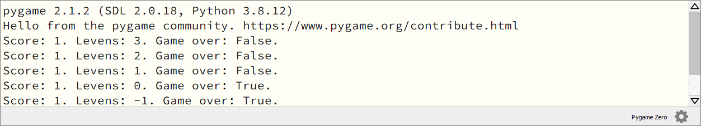
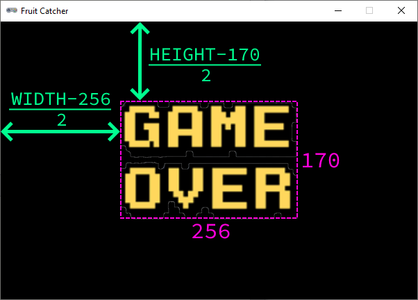

1.5. Game start en game over#
Het spel werkt, maar het begin en einde behoeven verbetering. We willen graag dat de speler het startmoment van het spel zelf kan bepalen en tevens moet ‘game over’ worden getoond wanneer de levens op zijn. We beginnen met het programmeren van dat laatste.
1.5.1. Game over#
Om de status van het spel (game over of niet game over) bij te houden, maken we een boolean variabele aan:
1import random
2
3# Vensterinstellingen
4WIDTH = 600
5HEIGHT = 400
6TITLE = 'Fruit Catcher'
7MARGIN = 20
8
9# Variabelen voor score en levens
10score = 0
11lives = 3
12
13# Variabelen om de status van het spel bij te houden
14game_over = False
Bij aanvang van het spel is het natuurlijk nog niet meteen game over en daarom geef je de variabele game_over de waarde False.
Wanneer moet game_over de waarde True krijgen? Als het aantal levens nul (of zelfs negatief) is. Dat gaan we in de update() functie checken. Om de waarde van game_over daadwerkelijk te kunnen wijzigen in de update() functie, dien je hem globaal te maken, net als we eerder deden met score en lives.
51# Update() functie
52def update():
53 global score, lives, game_over
Opdracht 01
Voeg aan de update() functie een if statement toe waarin game_over op True wordt gezet als het aantal levens kleiner of gelijk aan nul is. Doe dit in het else codeblok dat de lives variabele met 1 aflaagt:
68# Collision detection
69if fruit.top > basket.top:
70 if basket.collidepoint(fruit.center):
71 score += 1
72 else:
73 lives -= 1
74 # VOEG HIER HET IF STATEMENT IN
75 print(f'Score: {score}. Levens: {lives}.')
76 init_fruit()
Je kunt controleren of het if statement van opdracht 01 werkt, door de waarde van game_over in de console te printen:
68# Collision detection
69if fruit.top > basket.top:
70 if basket.collidepoint(fruit.center):
71 score += 1
72 else:
73 lives -= 1
74 if ...:
75 ...
76 print(f'Score: {score}. Levens: {lives}. Game over: {game_over}.')
77 init_fruit()
Run de code om te zien dat game_over van False naar True gaat zodra lives nul wordt.

Maar we willen natuurlijk dat de tekst ‘Game Over’ in het spelvenster verschijnt, in plaats van in de console. Daar hebben we de draw() functie voor nodig. Voeg daaraan het volgende if statement toe:
43# Draw() functie
44def draw():
45 screen.clear()
46
47 if game_over:
48 screen.blit('game_over', ((WIDTH-256)//2, (HEIGHT-170)//2))
49 return
50
51 fruit.draw()
52 basket.draw()
53 draw_score()
54 draw_lives()
De screen.blit() functie gebruikte je eerder om de hartjes te tekenen. Helaas gebruikt deze functie voor de positie altijd de linkerbovenhoek van de afbeelding, waardoor je een berekening moet uitvoeren om het plaatje mooi in het midden van het venster te krijgen. De afmetingen van onze game_over.png afbeelding zijn 256 x 170 pixels, dus de linkerbovenhoek moet terechtkomen op positie ((WIDTH-256)//2, (HEIGHT-170)//2).

In regel 49 zie je het keyword return. Dit gebruik je om direct de functie te verlaten. We willen namelijk niet dat regels 51 tot en met 54 nog worden uitgevoerd als het game over is. We hadden hiervoor ook een else kunnen gebruiken (zie de code hieronder), maar met het oog op wat we hierna gaan doen (het starten van de game programmeren), is het gebruik van return handiger.
43# Draw() functie
44def draw():
45 screen.clear()
46
47 if game_over:
48 screen.blit('game_over', ((WIDTH-256)//2, (HEIGHT-170)//2))
49 else:
50 fruit.draw()
51 basket.draw()
52 draw_score()
53 draw_lives()
1.5.2. Game start#
Voor de status game over maakten we een boolean game_over variabele en dat kunnen we voor game started ook doen:
13# Variabelen om de status van het spel bij te houden
14game_over = False
15game_started = False
Vervolgens voegen we aan de draw() functie een if statement toe dat de tekst Druk op de spatiebalk toont zolang game_started de waarde False heeft:
44# Draw() functie
45def draw():
46 screen.clear()
47
48 if not game_started:
49 screen.draw.text('Druk op de spatiebalk', center=(WIDTH/2, HEIGHT/2))
50 return
51
52 if game_over:
53 screen.blit('game_over', ((WIDTH-256)//2, (HEIGHT-170)//2))
54 return
55
56 fruit.draw()
57 basket.draw()
58 draw_score()
59 draw_lives()
Ook hier gebruiken we weer het return keyword om de draw() functie direct te verlaten. In de nu complete draw() functie gebeurt dus het volgende:
Wis alle vensterinhoud (
screen.clear()).Als het spel nog niet is gestart, toon dan de tekst
Druk op de spatiebalken verlaat dedraw()functie (eersteifstatement).Als het spel afgelopen is, toon dan de afbeelding
Game Overen verlaat dedraw()functie (tweedeifstatement).Teken het fruit, de mand, de score en de levens.
Door de returns in de if statements wordt stap 4 alleen uitgevoerd als het spel is begonnen en het nog geen game over is.
Als je nu de code runt, wordt Druk op de spatiebalk getoond maar er gebeurt nog niets wanneer de speler daadwerkelijk op die spatiebalk drukt. Daarvoor moeten we aan de update() functie code toevoegen die detecteert of de spatiebalk wordt ingedrukt.
Opdracht 02
Voeg aan de update() functie een if statement toe waarin game_started op True wordt gezet wanneer de speler op de spatiebalk drukt én de game nog niet is gestart. Doe dit boven het blokje # Keyboard events. Denk eraan de game_started variabele globaal te maken, anders kun je de waarde niet wijzigen in de functie.
61# Update() functie
62def update():
63 global score, lives, game_over, game_started
64
65 # Start game
66 # VOEG HIER HET IF STATEMENT TOE
67
68 # Keyboard events
69 if keyboard.left:
70 basket.x -= basket.speed
71 elif keyboard.right:
72 basket.x += basket.speed
73 if basket.right > WIDTH:
74 basket.right = WIDTH
75 if basket.left < 0:
76 basket.left = 0
Voor de linker- en rechterpijltjestoets gebruikten we in regels 66 en 68 keyboard.left en keyboard.right. Wat zou je voor de spatiebalk moeten gebruiken?
Hint
Gebruik keyboard.space om indrukken van de spatiebalk te detecteren.
Oplossing
Run je code om te testen of je nu de game kunt starten met de spatiebalk.
De game is bijna klaar, maar één ding werkt nog niet zoals het hoort. Run de code maar eens en druk níet op de spatiebalk. Kijk vervolgens wat er in de console gebeurt. Zonder dat je op de spatiebalk hebt gedrukt lijkt de game toch actief te zijn!
Vraag 01
Waardoor komt dit? Hoe kan het dat de score en/of het aantal levens verandert, zonder dat er op de spatiebalk is gedrukt? Probeer zelf het antwoord te vinden door goed naar je code te kijken alvorens je de oplossing opent.
Antwoord
Ook al is game_started False, alle code in de update() functie wordt nog gewoon uitgevoerd. Dus de appel valt nog steeds naar beneden (ook al zie je dat niet omdat hij niet wordt getekend) en de collision detectie werkt ook nog. Je zou zelfs met de pijltjestoetsen het (onzichtbare) mandje kunnen verplaatsen.
61# Update() functie
62def update():
63 global score, lives, game_over, game_started
64
65 # Start game
66 if keyboard.space and not game_started:
67 game_started = True
68
69 # Keyboard events
70 if keyboard.left:
71 basket.x -= basket.speed
72 elif keyboard.right:
73 basket.x += basket.speed
74 if basket.right > WIDTH:
75 basket.right = WIDTH
76 if basket.left < 0:
77 basket.left = 0
78
79 # Beweeg fruit
80 fruit.y += fruit.speed
81
82 # Collision detection
83 if fruit.top > basket.top:
84 if basket.collidepoint(fruit.center):
85 score += 1
86 else:
87 lives -= 1
88 if lives <= 0:
89 game_over = True
90 print(f'Score: {score}. Levens: {lives}. Game over: {game_over}.')
91 init_fruit()
We willen dat de code in de update() functie alleen wordt uitgevoerd als het spel is gestart. Dit kunnen we eenvoudig bewerkstelligen met een if statement en het return keyword:
61# Update() functie
62def update():
63 global score, lives, game_over, game_started
64
65 # Start game
66 if keyboard.space and not game_started:
67 game_started = True
68
69 # Exit de update() functie als de game nog niet is gestart of als het game over is
70 if not game_started or game_over:
71 return
72
73 # Keyboard events
74 if keyboard.left:
75 basket.x -= basket.speed
76 elif keyboard.right:
77 basket.x += basket.speed
78 if basket.right > WIDTH:
79 basket.right = WIDTH
80 if basket.left < 0:
81 basket.left = 0
82
83 # Beweeg fruit
84 fruit.y += fruit.speed
85
86 # Collision detection
87 if fruit.top > basket.top:
88 if basket.collidepoint(fruit.center):
89 score += 1
90 else:
91 lives -= 1
92 if lives <= 0:
93 game_over = True
94 print(f'Score: {score}. Levens: {lives}. Game over: {game_over}.')
95 init_fruit()
Test de code nogmaals en stel vast dat alles nu naar behoren werkt. Je kunt dan regel 94 (waarmee score, levens en game over in de console worden geprint) verwijderen of in commentaar veranderen, want deze regel diende slechts als hulp bij het debuggen.